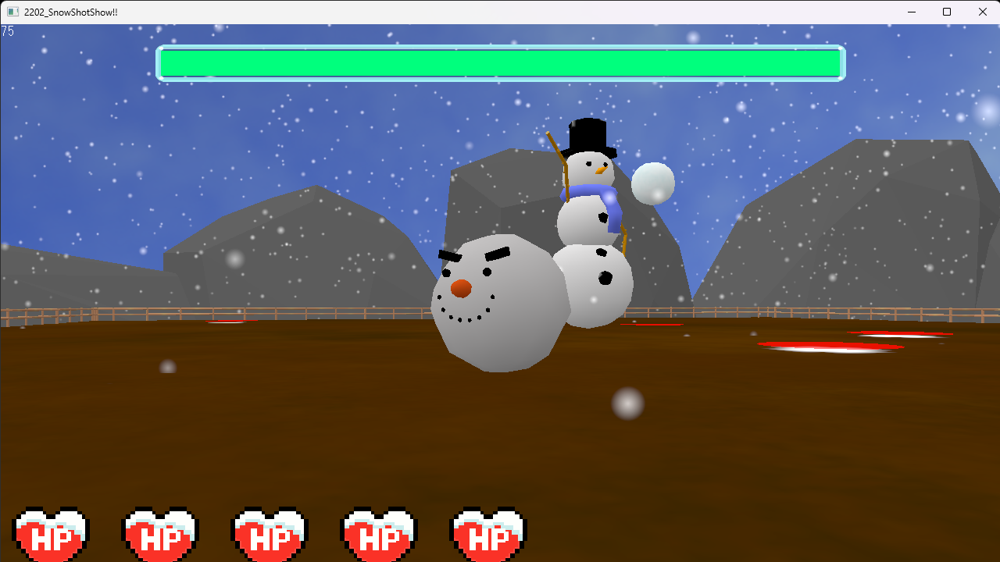
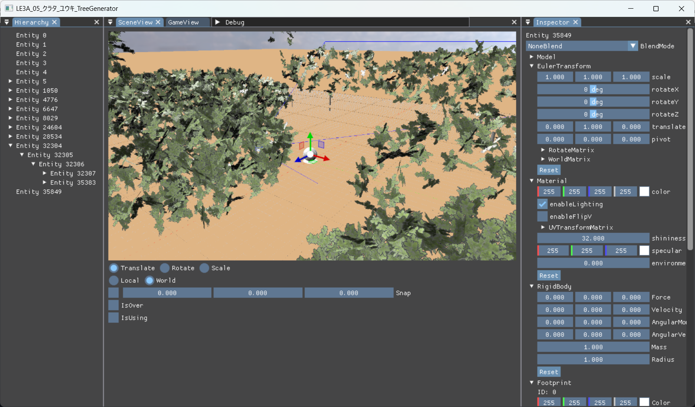
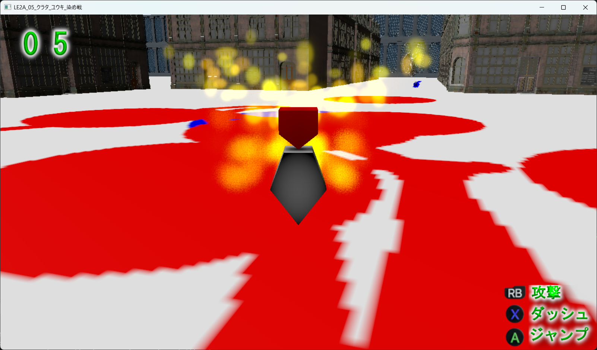

SnowShotShow!!
C++Wonder Engine3Dシェーダー・物理担当
01 / ROOTS
ゲームをつくるための、自分だけの道具。
設計から実装まで、少しずつ育てています。

A PERSONAL GAME ENGINE
Wonder Engineは、ゲーム制作を通して学びながら開発している自作エンジンです。描画、入力、シーン管理など、実装した機能や現在の開発状況をここに紹介します。
02 / CANOPY
ゲームや技術デモを通して、
試したこと・学んだことをまとめています。


03 / ABOUT THE DEVELOPER